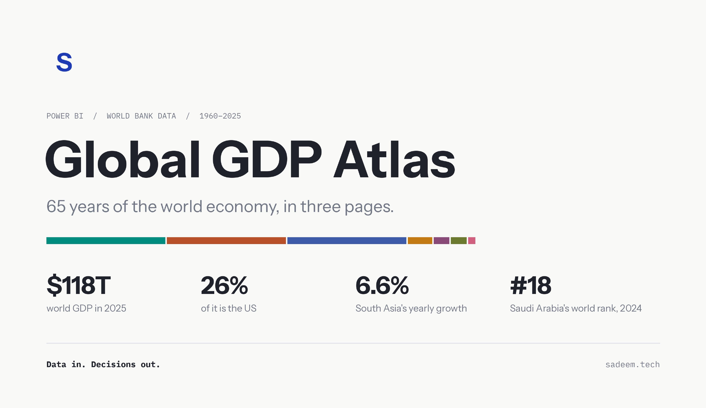
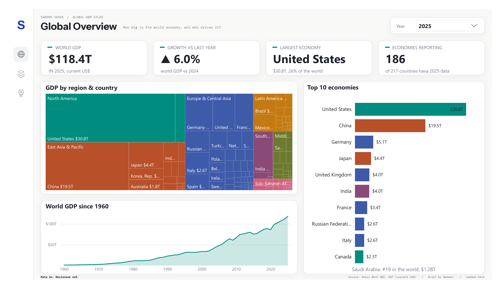
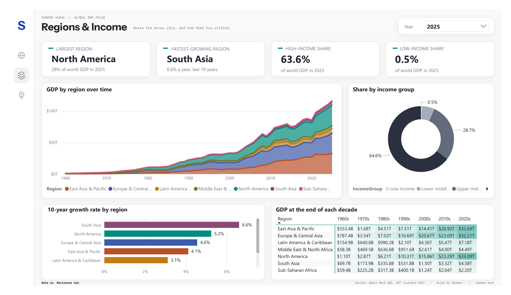
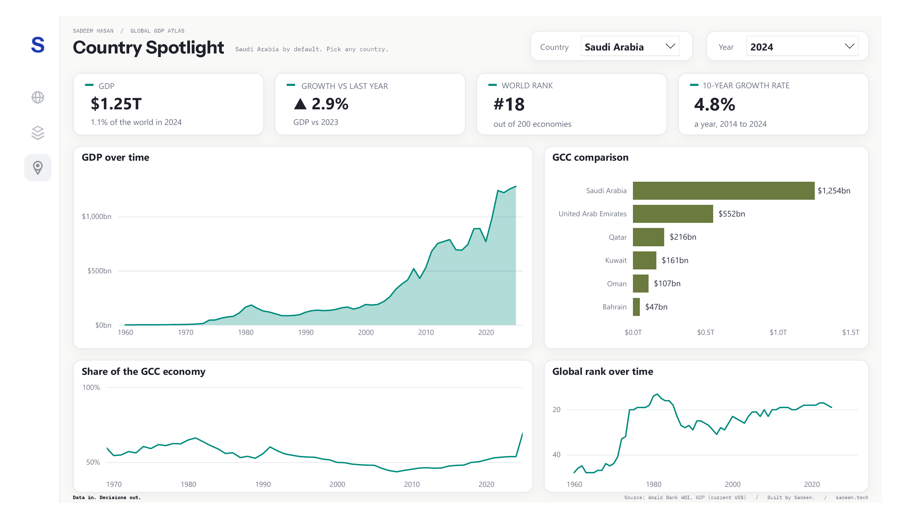

Case study
Global GDP Atlas
How the world economy grew from 1960 to 2025, and who grew with it. Sixty-five years of World Bank data, as a Power BI dashboard and an interactive website I built from scratch.
- Built with
- Power BI, Power Query, DAX, Python, HTML and D3
- Data
- World Bank, World Development Indicators
- Covers
- 217 economies, 1960 to 2025
- Outputs
- A three-page Power BI dashboard and an interactive website

The idea
GDP numbers are everywhere, but they rarely tell you much on their own. I wanted to take one public dataset and make it easy to read: where the world's money is made, how that changed, and where Saudi Arabia and the Gulf sit in that picture.
The data
The source is the World Bank's GDP file (current US$), covering 217 economies from 1960 to 2025. The raw file mixes countries with regions and income groups, so the first step was separating them. I cleaned it into a simple star schema:
World totals come from the World Bank's official world figure, not from adding up countries. Some economies haven't reported 2025 yet, so the dashboard says so instead of hiding the gap.
How I built it
1. Cleaning the data
- Converted the original .xls file and reshaped it from one column per year to one row per economy per year.
- Removed empty values, so a missing year stays missing instead of showing as zero.
- Matched every economy to its region and income group using the World Bank's metadata.
- Separated the 217 economies from 48 aggregate rows, such as regions and income groups, so nothing is counted twice.
- Added a GCC flag for the six Gulf states, and an order for income groups so they sort from low to high, not alphabetically.
- Built a year table with decades for grouping.
2. Modelling in Power BI
- Linked the tables with many-to-one relationships and hid the fields readers don't need.
- Wrote about 30 DAX measures for growth, 10-year CAGR, world rank, share of world and share of the GCC. Each one follows the year and country you pick, so GDP shows one year's value instead of adding every year together.
- Used the World Bank's world row for world GDP, and countries only for rankings and shares.
- Added a Top 10 filter and custom sorting for income groups.
3. Designing the report
- Created a custom colour theme and a background for each page.
- Set which filters affect which charts, so the charts over time always show every year while the cards follow the year you pick.
- Added navigation buttons between the three pages.
The dashboard



The website
A dashboard is good for exploring. It's less good for explaining. So I also built a website for the same data, coded by hand in HTML and D3, with the data prepared in Python.
It tells the story in eight steps as you scroll. One chart changes as you read, every chart shows exact values when you hover, and the last step lets you look up any economy yourself.
Design choices
- Seven region colours, each tested to stay distinct for colour-blind readers.
- One accent colour for the thing that matters in each chart.
- Plain sentences over labels, so every chart says what it shows.
- Every number traced back to the source data.
What I found
- 87×The world economy is about 87 times its 1960 size, in current dollars.
- #1The United States has ranked first every year. It produced about 40% of world GDP in 1960, and still produces about 26% today.
- #2China went from 11th in 1990 to 2nd by 2010.
- 6.6%South Asia has grown fastest over the last ten years, at 6.6% a year.
- #19Saudi Arabia's rank follows the oil market. It reached 13th in 1981, and it was 19th in 2025, at $1.28T.
What I learned
Most of the work happened before any chart. Cleaning the data, separating countries from aggregates, and making every measure respond correctly to the year you pick took longer than the visuals.
Clean data in, clear decisions out.